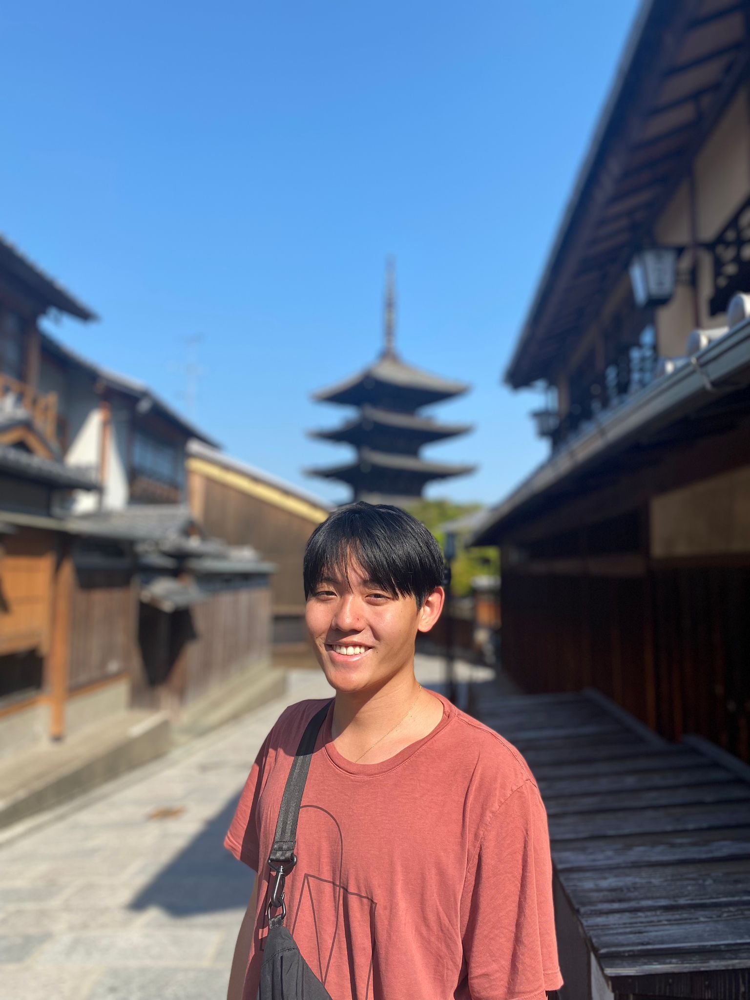

|
William Lin
|
 |
William Lin
Masters student
CS Theory, UC Berkeley
willin@berkeley.edu
|
About me
I received by B.S. in Electrical Engineering and Computer Science with a minor in Mathematics from UC Berkeley with high honors in 2023. I am currently a Masters student in the EECS department at UC Berkeley and will be graduating in 2024. I am studying algorithms and am grateful to be advised by Satish Rao.
My main interests in computer science lie in algorithms and cs theory. I am especially interested in approximation algorithms, for their mathematical bounds, and randomized algorithms, for their clean efficiency. I am enthusiastic about algorithms and tools for improving them. I am currently interested in acquiring knowledge and experience in artificial intelligence and machine learning as well, and am looking for chances to gain experience here.
For fun I spend time rock climbing, running, and swimming. I also organize a reading group for books I like, and am interested in learning East Asian languages.
Research
My research interests include
Algorithms
Semidefinite Programming
Complexity Theory
Machine Learning
Reinforcement Learning
ML Theory
Current work
I am working with Professor Satish Rao on examining graph decomposition as a method for improving fast algorithms. Many recent advances in runtime for problems (e.g. the recent almost-linear time advance for the max-flow problem) rely on graph decomposition as a subroutine as well as having dynamic data structures robust to adversial randomness. I am currently working on efficient approximation algorithms for the cut conductance problem using the cut matching paradigm with flows and also semidefinite programming.
Work Experience
Stottler Henke Associates Inc (May 22 - Aug 22)
I was an Artificial Intelligence Developer Intern at Stottler Henke. I was involved in two main projects, one of which was modernizing and simplifying a satelitte scheduling program that essentially approximated solutions to NP-hard problems. This also involved porting it to linux from windows and fixing the issues involved, and improving it so that it could be containerized. I gained much experience with working on large scale projects from this.
I was the main developer on the second project I worked on, which involved designing a framework for drones to communicate their actions when acting in swarms. The framework also allowed for the use of artificial intelligence techniques to improve the behavior of the drone swarms over time.
Teaching
UC Berkeley:
CS70 UGSI (Sp21, Su21, Fa21)
CS70 Reader (Su20, Fa20)
CS172 Reader (Sp22)
CS176 Reader (Fa23)
Projects
Approximation to Dominating Set
End-To-End Encrypted File Sharing System
Optimality for SoS SDPs: a Survey
Overcoming Counting Challenges in Image Generation Using RL
Kawasaki Dynamics Beyond Uniqueness Threshold Presentation
Methods of Bayesian Inverse Reinforcement Learning
Coursework
Favorite courses at Berkeley I've taken:
CS70: Discrete Math and Probability Theory
CS170: Efficient Algorithms
CS172: Introduction to Complexity Theory
CS174: Combinatorics and Discrete Probability (Randomized Algorithms)
CS278: Machine Based Complexity Theory
CS285: Deep Reinforcement Learning
CS281A: Statistical Learning Theory
CS294-180: Partition Functions: Algorithms and Complexity
CS294-212: Efficient Algorithms and Computational Complexity in Statistics
Awards
Graduated with High Honors
Eta Kappa Nu member
Regents and Chancellors Scholarship
|